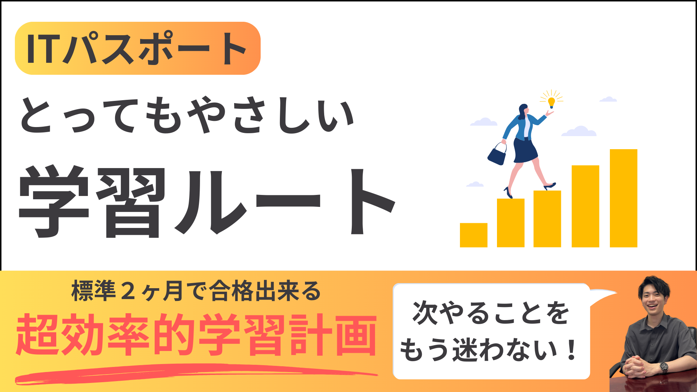

未経験専門 / 短期合格コーチング
ITパスポート
とってもやさしい合格プロジェクト
1人1人に真剣に寄り添う、1対1完全個別指導。
「もう挫折させません」を本気で実現するサポートです。
このページは2ヶ月29,800円の特別案内ページです。

このプロジェクトのコンセプト
「IT未経験の人が、効率的に、確実にITパスポートに合格できる」
この一点に絞って、学習面・習慣面・メンタル面まで徹底サポートします。
こんな人におすすめ
- IT未経験で、何から始めるべきか分からない
- 仕事や育児で忙しく、勉強時間が限られている
- 学習計画が立てられず、途中で止まりやすい
- 周りに質問できる人がいない
- 英語やカタカナ用語でつまずきやすい
- 計算問題に苦手意識がある
- 最短で効率よく合格したい
- 勉強の習慣化をサポートしてほしい
- 1人だと不安で継続が難しい
- 資格勉強を通じてIT基礎力を身につけたい
これらのお悩み、全てこの合格プロジェクトで解決できます。
プロジェクト内容
1. ファーストミーティング


まずは最初にあなたの現状を聞かせていただきます。 前提知識や忙しさ、取れる勉強時間や合格目標などを聞かせていただいて、 あなたでもいける計画をオーダーメイドで作成します。 次回ミーティング日程まで決めた上で、それまでの学習計画まで具体化します。
2. 週間ミーティング
1週間に1回ほどミーティングを行います。最初に進捗を確認し、 遅れがあれば「巻き返すか、範囲を調整するか」をその場で判断します。 不明点は画面共有とホワイトボードで分かるまで解説します。 必要であれば講義形式で1分野を丸ごと解説します。
3. 臨時ミーティング
週間ミーティングで聞ききれなかった内容や、試験直前の集中特訓にも対応します。 日程調整URLをお渡しし、リスケや追加相談にも柔軟に対応できる環境を整えています。
4. 勉強会


不定期で任意参加の勉強会を実施しています。 共通してつまずきやすいポイントをまとめて解説し、横のつながりも含めて学習継続を後押しします。
5. 学習管理


勉強できた日はLINEで報告をいただきます。前日の内容をコピーして更新する形式なので、短時間で提出できます。 過去問結果はデータシートに記録し、正答率や優先順位を適切に管理します。
6. チャットサポート

チャットは送信時間を問いません。深夜2時、3時の報告や朝6時台の質問も日常的に対応しています。 「聞きたい時に聞ける」ことで、悩みを溜めずに前進できます。
教材（合格のための7教材）
学習ルート


参考書や過去問をどの順番で、どのペースで進めるかを明確にしています。 次にやることが迷わない状態を作り、学習の手を止めません。
計算問題動画（100問以上）


文字説明だけでなく、実際に手を動かして解く流れをそのまま解説しています。 計算問題が苦手な方でも再現しやすい形式です。
計算ドリル（全30問）

割り算や割合など、前提の算数から復習できます。 「計算問題に手が出ない」状態をなくすための基礎教材です。
過去問解説動画（全700問）

令和分を中心に、問題ごとの考え方と優先度を解説しています。 暗記すべきか、理解すべきか、捨てるべきかを判断できるようになります。
英略語帳（120語） / カタカナ語帳（154語）


参考書全体から重要語を抽出し、重要度順で覚えられるようにしています。 すきま時間でも学べる形式です。
新シラバスクイズ

参考書や過去問だけでは拾いきれない最新単語を補強するための教材です。 新傾向対策として活用できます。
一般的な講座との違い
| 項目 | 一般的な講座 | 合格プロジェクト |
|---|---|---|
| 対面1対1講義 | なし | あり |
| チャット質問 | 1日3〜5回程度 | 回数無制限 |
| 日報管理 | なし | あり |
| 定例ミーティング | なし | 5〜7日に1回 |
| 臨時ミーティング | なし | 回数無制限 |
| 平均合格日数 | 3〜4ヶ月 | 約2ヶ月 |
参加者の声
30代女性（金融企業勤務）
仕事で忙しく不安があったものの、毎日の日報と週次ミーティングで質問習慣が定着。 勉強期間2ヶ月半、初回340点から本番660点で合格しました。
40代女性（保険会社勤務）
ゼロから学習開始。つまずきやすい論点をミーティングで重点補強し、 成績が1ヶ月目から上昇。勉強期間2ヶ月、本番690点で合格しました。


僕の想い
ITパスポートは、やり方と対策さえしっかりすれば合格できる試験です。
ただ、最初のつまずきで手が止まり、そのまま挫折してしまう方が本当に多いです。
だからこそ「正しい順番で、伴走しながら進める」ことに価値があると考えています。
料金（このページ限定）
通常プラン（このページでは受付停止）
1ヶ月プラン26,800円
2ヶ月プラン39,800円
3ヶ月プラン49,800円
特別案内
2ヶ月プランのみ
通常 39,800円29,800円
未経験から短期合格を狙う方向けの最優先プランです。
参加方法（最重要）

- このページを見終えたら、講師LINEのチャット画面に戻る
- チャット内の案内ボタンをタップする
- 「2ヶ月29,800円プラン希望」と送信する
- そのまま参加までの流れを案内します